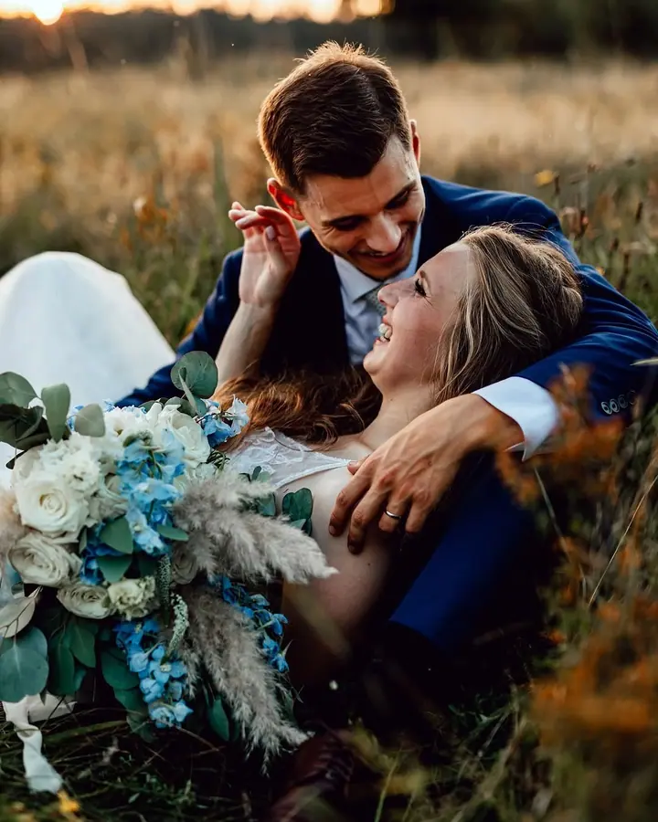
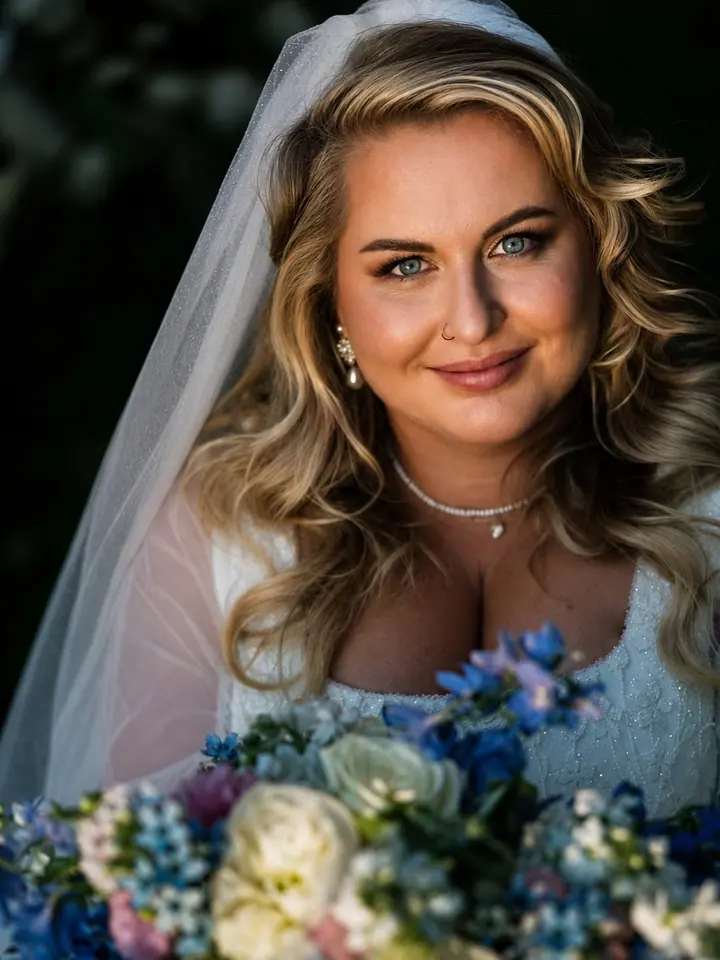

jedna
Svatby
Svatbám se věnuji nejvíc. Fotím celý den od příprav po večer a jde mi hlavně o emoce, které si pak můžete znovu připomenout.

Svatební fotograf · České Budějovice, celá Česká republika, Rakousko

Jmenuji se Jiří Hazuka a jsem svatební fotograf z Českých Budějovic. Kromě svateb fotím portréty v ateliéru i venku, rodiny a nejmenší děti a také reportáže ze společenských akcí. Za vámi rád přijedu kamkoli po Česku i do Rakouska.
Více o mněCo fotím
jedna
Svatbám se věnuji nejvíc. Fotím celý den od příprav po večer a jde mi hlavně o emoce, které si pak můžete znovu připomenout.
dvě
Rodinné fotky celé rodiny, od nejmenších po teenagery. Můžeme fotit v ateliéru, venku i v klidu doma.
Portrétní focení v ateliéru nebo v exteriéru. Podle toho, co je vám bližší a co se hodí k vaší představě.
Dokumentuji oslavy, večírky a další společenské akce. Vznikne reportáž, která ukáže, jak akce opravdu proběhla.
Fotky, díky kterým si ty emoce připomenete
Za objektivem
Fotografování se aktivně věnuji od roku 2011. Celou dobu mě nejvíc baví lidé a to, co prožívají. Proto se na fotkách snažím zachytit hlavně emoce, ne jen hezky naaranžované pózy.
Zaměřuji se především na svatby. Vedle nich fotím portréty v ateliéru i v exteriéru, rodinné focení a dokumentuji také společenské akce, od oslav narozenin po firemní večírky.
Sídlím v Českých Budějovicích, ale za focením jezdím po celé České republice i do Rakouska. Budu rád, když vás moje tvorba zaujme a ozvete se mi.
Jiří
Ozvěte se e-mailem, telefonem nebo přes Instagram. Napište mi termín, místo a co si od focení představujete.
Probereme průběh dne nebo focení, místa a vaše přání, abychom v den D nemuseli nic řešit.
Přijedu za vámi a fotím v klidu, nenápadně a s důrazem na skutečné emoce.
Fotky pečlivě vyberu a upravím a pošlu vám je v hotové galerii.
Portfolio
Otázky
Ano. Fotím po celé České republice a jezdím i do Rakouska.
Ano, fotím portréty v ateliéru i venku, rodinné focení a reportáže ze společenských akcí.
Cenu vám připravím podle rozsahu a typu focení. Napište mi pár základních informací a pošlu vám nabídku.
Napište mi co nejdřív datum a místo svatby. Ověřím, jestli mám volno, a domluvíme se na dalším postupu.
Napište pár vět o tom, co si představujete. hazuka.jiri@seznam.cz